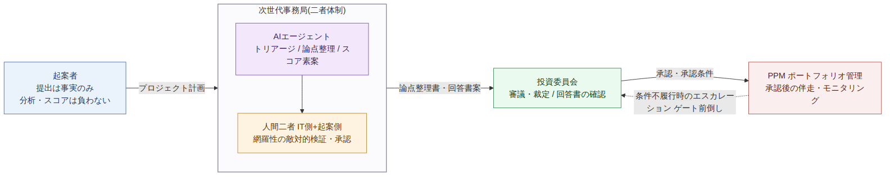
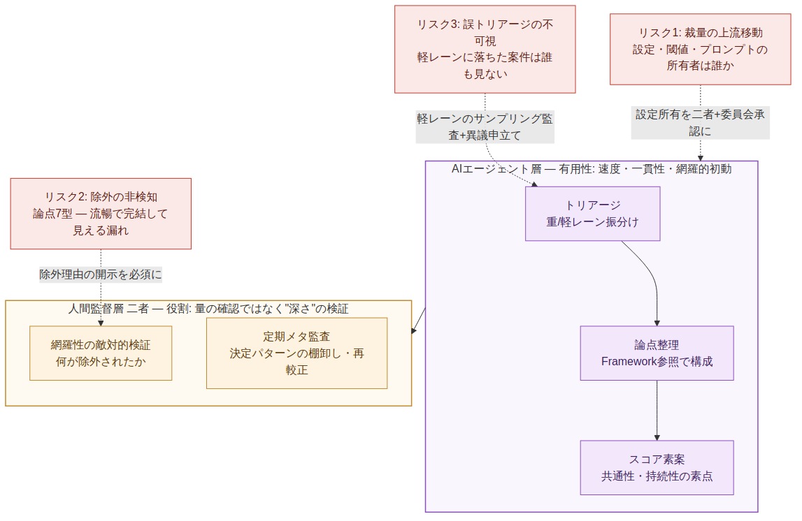
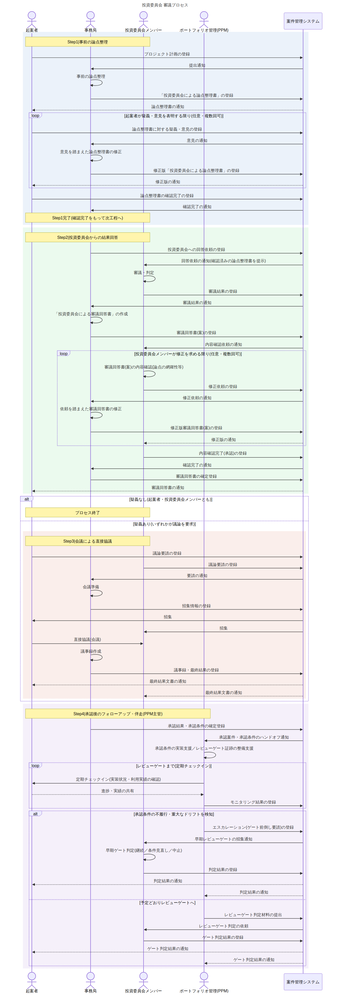

本書は、投資委員会の審議プロセスを非同期・文書駆動へ再設計し、CMS（案件管理システム）とAIエージェントを事務局機能へ導入する構想をまとめたものである。まず現行運営の問題点を列挙し、提案するガバナンスモデルとその問題解決の仕組みを示す。続いて技術的変革としてCMSとAIエージェントの導入効果を述べ、最後に、AIエージェント導入に伴う有用性・限界・内在リスクを問題提起として記載する。
| 宛先 | 投資委員会 事務局メンバー・管理者 ／ 投資委員会メンバー |
|---|---|
| 文書区分 | プロセス改善に関する企画提案（内部審議用） |
| 目的 | 現行審議プロセスの構造的問題の解消と、CMS・AIエージェント導入によるガバナンスモデルの提示 |
| 診断の出典 | 審議機構の構造分析（分析層）で導いた4症状に対する応答として設計されている |
現行の投資委員会は会議主義で運営されているが、その会議が本来の機能を果たせていない。運営の実態から、次の4つの構造的な問題が確認されている。
| # | 問題 | 内容 |
|---|---|---|
| P1 | 会議が機能していない | 会議主義で運営されているにもかかわらず、審議の場が実質的に機能しておらず、意思決定の質・スピードにつながっていない。 |
| P2 | 事前資料の作成負荷 | 会議の要否にかかわらず、起案者が事前に用意すべき資料の作成負荷が重い。この不満は起案者からもれなく上がっている。 |
| P3 | 承認可否の回答が遅い | 会議の開催頻度が高くないため、承認可否の回答を得られるまでの時間が長すぎる。案件のスピードが会議日程に律速されている。 |
| P4 | 承認後の空白 | 投資委員会は審議結果を伝えるのみで、その後の具体的なサポートやフォローアップがない。承認された案件が成果に結びつくかを見届ける仕組みがない。 |
提案の骨子は、審議を会議依存の同期プロセスから、CMSを介した非同期・文書駆動プロセスへ転換し、あわせて承認後の伴走機能と、権限が特定主体に集中しない役割分離を組み込むことである。

本モデルの要は、論点設定・事実認定・スコアリング・裁定・伴走という機能を、単一の主体に集中させないことである。各機能の担当と、それに対するチェックを次のとおり配置する。
| 機能 | 担当 | チェック（牽制） |
|---|---|---|
| 論点整理（framing） | 事務局（二者体制） | 起案者の疑義・意見ループ（Step1） |
| 事実認定 | 起案者＝事実提出 ／ 事務局＝整理 | 事実と評価の分離（申請者は事実のみ） |
| スコアリング | 事務局が素点、委員会が確定・重み | 二者による共同署名・委員会レビュー |
| 裁定 | 投資委員会 | 回答書の内容確認ゲート（Step2） |
| 承認後の伴走 | ポートフォリオ管理（PPM） | 裁定主体と分離＋委員会へのエスカレーション権限 |
第1章で挙げた4つの問題に対し、本モデルがどの機構で応えるかを対応づける。
| 問題 | 新モデルの打ち手 | 効果 |
|---|---|---|
| P1 会議が機能していない | 非同期・文書駆動へ転換し、Step3（会議）を疑義時のみの例外とする | 会議は本当に協議が要る案件に限定され、場が機能する |
| P2 事前資料の作成負荷 | 論点整理を事務局が担い、起案者に求めるのは事実のみ（事実と評価の分離） | 起案者の分析 framing 負荷が構造的に消える |
| P3 回答が遅い | CMS駆動で会議開催を待たずに承認可否が進む。各ステップにSLA（期限）を設定 | 回答速度が会議頻度から切り離される |
| P4 承認後の空白 | Step4でPPMが伴走（条件実装支援・定期チェックイン・エスカレーション） | 「裁定して終わり」から「成果まで伴走」へ転換 |
CMSは、全ステップを非同期で成立させる基盤である。提出・通知・登録・確認がシステム上で完結し、審議が会議日程から独立する。
本企画の中核として、事務局機能（トリアージ・論点整理・スコア素案）をまずAIエージェントが担い、人間はその結果を検証・管理する体制を想定する。人間は、明らかな誤りがないか、そしてエージェント自体が正しく機能しているかを管理する役割を負う。
ただしこの体制は、人間の役割を「量の確認」から「深さ＝検証可能性（reviewability）の担保」へと再定義することを前提とする。詳細は第5章で問題提起として述べる。
以下は導入を止めるための論点ではなく、導入を成功させるために、あらかじめ設計へ織り込むべき論点である。AIエージェントの有用性は前章のとおりだが、それと表裏の限界とリスクを直視しておく。

速度（会議・人手に律速されない）、一貫性（恣意の排除）、初動の網羅性（フレームワーク参照）。これらは第1章の問題 P1〜P4 の解消を、人的キャパシティの制約なしに実現するための前提となる。
| リスク | 内容 | 緩和策 |
|---|---|---|
| R1 裁量の上流移動 | 二者体制は外形上の裁量を中立化するが、真の裁量はエージェントの設定（ルール・閾値・プロンプト）へ移る。「AIが判定した」が正統性の“ロンダリング”になりうる。 | 設定の所有を二者＋委員会の承認事項とし、変更を可視化する |
| R2 除外の非検知 | エージェントの失敗は流暢で完結して見える出力に宿る。「明らかな誤り」を探す軽いレビューは、抜け落ちた論点を通してしまう（論点7型の漏れ）。 | 「検討したが落としたもの／なぜ立てなかったか」の開示を必須化し、人間レビューを網羅性の敵対的検証に校正 |
| R3 誤トリアージの不可視 | 外部性の高い案件が軽レーンへ誤送されると、その案件は誰の目にも触れないまま通過する。最も結果が重く、最も観測されない誤差。 | 軽レーンのサンプリング監査、または起案者による安価な異議申立て経路 |
本モデルを「なぜ納得すべきか」を理屈ではなく構造で示せる状態にするため、導入前に次の2点を確定させる必要がある。
現行がこれほど機能不全である以上、本提案がもたらすトレードオフは概ねポジティブと考えられる。速度・負荷・承認後の伴走・事務局の外形的公正さは、本モデルで構造的に解ける。
残る主眼は、AIエージェント層に集約された裁量と、それに対する人間監督の校正に絞られる。第5章の設計論点（とりわけ Q1・Q2）を確定させることが、抜本改革を安全に着地させるための要件である。まずは外部性の明確な旗艦案件から段階的に適用し、CMSに蓄積される実績を根拠に、対象範囲とガバナンスを拡張していくことを推奨する。
Step1〜Step4の全メッセージフローを示す。各主体（起案者・事務局・投資委員会メンバー・PPM）とCMSの間の登録・通知・確認の往復、および今回追加した「回答書の内容確認ゲート（Step2）」と「PPMによる承認後の伴走・エスカレーション（Step4）」を含む。
